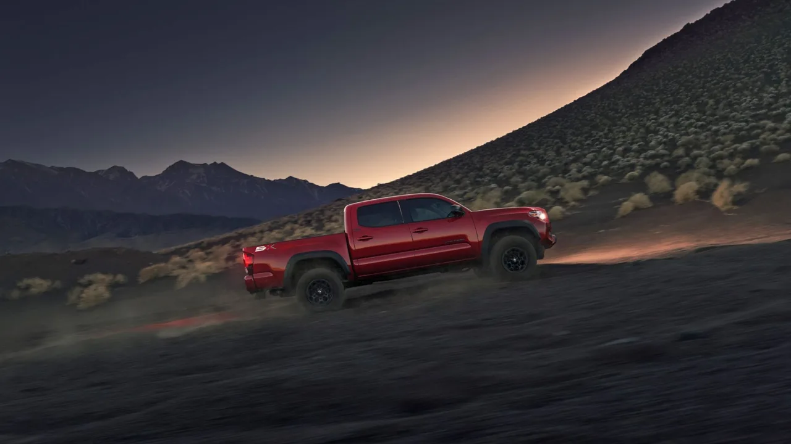
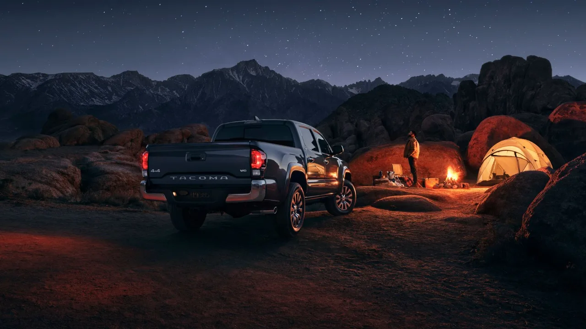
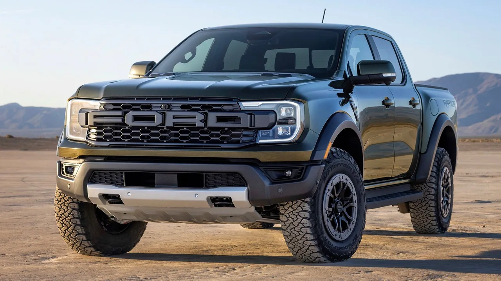
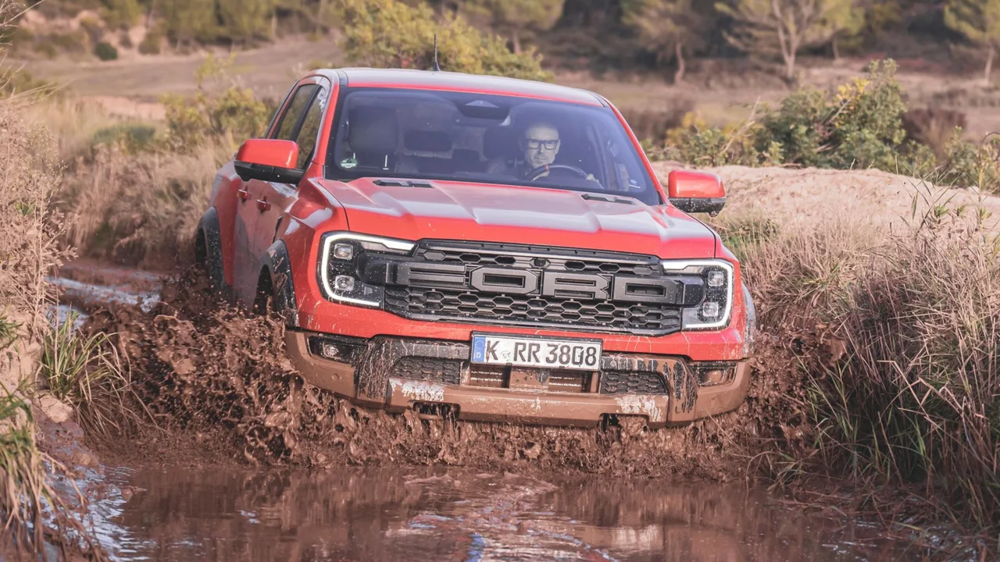

▲ 토요타 타코마. 감가 곡선이 유독 완만한 픽업으로 꼽힌다
새 차를 사는 것은 거의 언제나 돈을 잃는 일입니다. 럭셔리 SUV를 사든 스포츠카를 사든 감가는 모두에게 찾아옵니다.
가치가 오르는 경우는 극히 드뭅니다. 2017년 40만 달러대에서 시작한 2세대 포드 GT가 지금 중고 시장에서 두 배쯤 하는 정도가 예외입니다.
그런데 픽업트럭 중에는 이상한 사례가 있습니다.
1. 감가의 일반 법칙
새 차는 반짝이고 설레지만, 통상 서비스 첫 해에 원래 가치의 약 20%를 잃습니다. 그리고 도로에서 5년을 보내면 총 40~50%가 빠집니다.
대부분에게는 그냥 받아들여야 하는 일입니다. 차는 타라고 만든 물건이고, 긁히고, 커피를 쏟고, 부품이 망가집니다. 취향에 맞춰 튜닝을 해도 그 튜닝이 값을 올려주지는 않습니다.
| 경과 | 잔존가치 |
|---|---|
| 1년 | 약 80% |
| 5년 | 약 50~60% |
| 이후 | 하락폭 완만 |
2. 픽업은 왜 다른가
픽업트럭도 기본적으로는 같은 패턴을 따릅니다. 처음에 빠르게 값이 떨어진 뒤 평지나 골짜기를 찾아 머무릅니다.
그런데 V6 토요타 타코마는 다릅니다. 초반에 어느 정도 값이 빠진 뒤로는, 원하는 만큼 타고도 산 값과 비슷하게 되팔 수 있는 몇 안 되는 트럭으로 꼽힙니다.

▲ 타코마는 중고 시장에서 수요가 꾸준해 가격 방어력이 높다 ⓒ CarBuzz
📍 픽업의 잔존가치가 높은 이유
픽업은 대체재가 적습니다. 견인과 적재가 필요한 사람에게 세단이나 SUV는 선택지가 아닙니다.
여기에 내구성에 대한 신뢰가 더해지면 중고 수요가 두터워집니다. 수요가 두터우면 가격이 잘 떨어지지 않습니다.
3. 다만 조건이 붙습니다
중고차 가격은 하나의 숫자가 아닙니다. 지역, 주행거리, 소유자 수, 상태 등에 따라 크게 달라집니다.
"이 차는 감가가 없다"는 표현은 평균적인 경향이지, 개별 차량의 보장이 아닙니다. 같은 모델이라도 사고 이력이 있거나 주행거리가 과하면 이야기가 달라집니다.
| 변수 | 영향 |
|---|---|
| 지역 | 픽업 수요가 높은 지역일수록 유리 |
| 주행거리 | 기준선을 넘으면 급격히 하락 |
| 소유자 수 | 적을수록 유리 |
| 상태·이력 | 사고 이력은 회복 불가한 감점 |

▲ 레저 수요가 붙는 픽업은 중고 시장에서 회전이 빠르다 ⓒ CarBuzz
4. 다른 후보들
타코마만 있는 것은 아닙니다. 오프로드 성향이 강한 상위 트림일수록 수요가 특정되고, 그만큼 가격 방어가 잘 되는 경향이 있습니다.
포드 레인저 랩터처럼 성격이 뚜렷한 모델도 같은 이유로 잔존가치가 높게 유지됩니다. 대량 판매 트림보다 오히려 유리한 구조입니다.

▲ 성격이 뚜렷한 상위 트림일수록 중고 시장에서 가격이 잘 유지된다 ⓒ CarBuzz
5. 국내 시장에서는
국내 픽업 시장은 미국과 규모가 다릅니다. 그러나 원리는 같습니다.
국내에서도 수요가 특정된 차종은 감가가 완만합니다. 화물차로 분류돼 세금 부담이 낮은 픽업, 레저 수요가 붙는 모델이 그렇습니다.
확인 방법도 같습니다. 사려는 모델의 3년 전 신차가와 현재 중고 시세를 비교해 보면 그 차의 감가 곡선이 바로 보입니다.

▲ 오프로드 성향이 강할수록 수요층이 뚜렷하고, 그만큼 가격이 버틴다 ⓒ CarBuzz
6. 결론
"감가가 없는 차"라는 표현은 정확하지 않습니다. 정확히는 초반 하락 이후 곡선이 평평해지는 차입니다.
그래서 이런 차를 살 때 유리한 시점은 신차가 아니라 초반 감가가 끝난 중고입니다. 그 지점에서 사면 몇 년을 타고도 큰 손실 없이 정리할 수 있습니다.